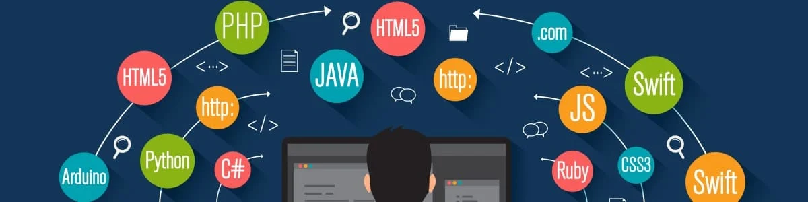

Introdução
Agora que já sabemos algumas características importantes da linguagem JavaScript, vamos aprender sobre as IDEse os editores de código. Afinal, são eles que proporcionam um ambiente de desenvolvimento de códigos para a criação de sites e programas
O que são IDEs?
Uma Integrated Development Environment (IDE) é um ambiente de desenvolvimento com várias ferramentas que auxiliam o programador na criação de seus códigos.
Por meio das IDEs, é possível agilizar muitos processos de desenvolvimento.
Linguagens com IDE
As IDEs são vinculadas a uma linguagem, ou seja, umas são focadas em JavaScript, outras em Python, Java etc. Isso gera acesso a várias funcionalidades voltadas para a linguagem que o programador escolheu. Por exemplo, o acesso rápido a algumas funções e bibliotecas.

Exemplo de uma IDE.
Editores de código
Diferente das IDEs, os editores de código-fonte são ambientes de desenvolvimento que NÃO estão focados em uma linguagem específica. Eles podem ser usados para mais de uma linguagem ou podem ser modificados pelo programador para servir quantas linguagens ele quiser. Basicamente, o editor de código é um editor de texto com funcionalidades adicionais.
Logo do VScode, um famoso editor de códigos.
Como montar o seu ambiente?
Para escolher um ambiente, você precisa pesquisar, de acordo com suas necessidades, quais IDEs ou editores de código são melhores para a linguagem que você irá programar. Por exemplo, um editor de código muito utilizado para a linguagem JavaScript é o VS Code. Porém, para essa linguagem, também é possível usar uma versão on-line das IDEs e desenvolver seus códigos.
Versalidade
Os editores de código são customizáveis, tanto esteticamente como funcionalmente. Como já mencionado, existem aqueles que podem servir de ambiente de desenvolvimento para qualquer linguagem, basta configurar. Portanto, as IDEs e os editores são ferramentas de grande importância para o desenvolvimento do seu código.
Linguagens de programação.